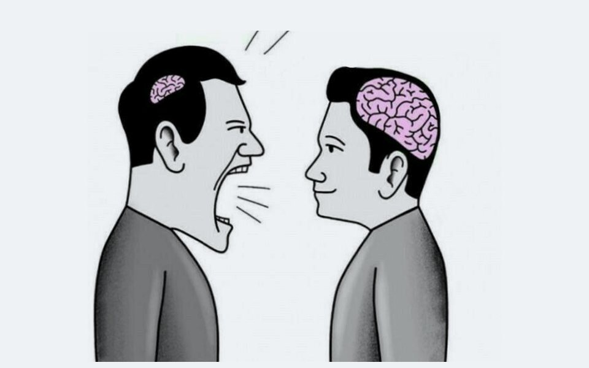

Por qué el alcohol pega distinto a esta edad
Se considera que el cerebro termina de madurar alrededor de los 25 años. Las zonas que regulan el control de impulsos y la toma de decisiones son de las últimas en desarrollarse, y el alcohol interfiere justo ahí.

Aprendizaje y memoria
El consumo frecuente puede afectar la concentración y el rendimiento escolar, y dificultar retener lo que se estudia.
Riesgo de dependencia
Quienes empiezan a beber a edades tempranas tienen más probabilidad de desarrollar problemas con el alcohol en la vida adulta.
Decisiones de riesgo
Beber aumenta la probabilidad de accidentes, peleas, violencia y relaciones sexuales sin protección.
Estado de ánimo
El alcohol puede empeorar la ansiedad y la tristeza. Muchas veces se usa para tapar esas emociones, y ahí empieza un círculo difícil de romper.